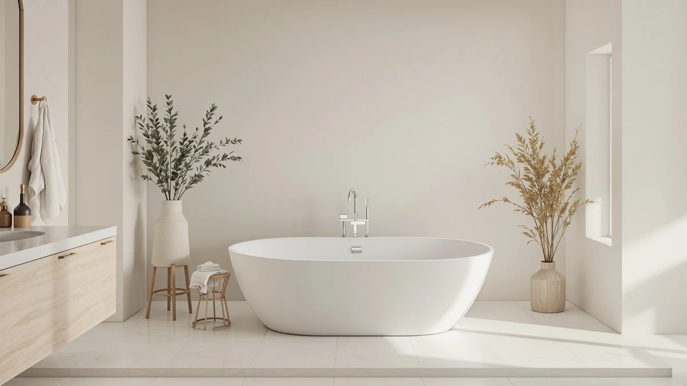

FerdY Bali Elite Acrylic Freestanding Bathtub Review (2026): Worth It?
Prices and picks verified as of November 2026. Independent, reader-supported reviews.


Quick Answer
This FerdY Bali Elite Acrylic Freestanding Bathtub review finds the 67 inch FerdY tub is the best value of the four acrylic freestanding bathtubs compared here, since it costs less than the WOODBRIDGE, Empava, and MonBlari while matching or beating their published size and listing detail. At $968.99, it's priced below all three alternatives, and its Amazon listing includes five product photos that help you check the basin and drain placement before you order.
Our pick: FerdY 67" Bali Elite Acrylic — $968.99 Check Price on Amazon
Bottom line: our top pick is the FerdY 67" Bali Elite Acrylic Freestanding Bathtub at $968.99.
Things to Know Before You Buy
- This FerdY Bali Elite Acrylic Freestanding Bathtub review compares four acrylic freestanding tubs, and the FerdY is the least expensive of the group at $968.99.
- The FerdY measures 67 inches long, the same length as the Empava, while the WOODBRIDGE stretches to 72 inches and the MonBlari is the most compact at 59 inches.
- All four tubs covered here are built from acrylic, according to the product names listed on Amazon, rather than cast iron or stone resin.
- None of the four listings referenced in this review publish a star rating or review count, so the comparison relies on published pricing, size, and listing detail rather than customer scores.
- The FerdY's Amazon listing includes five product photos, the most visual detail of any tub in this comparison.
This FerdY Bali Elite Acrylic Freestanding Bathtub review looks at how the 67 inch soaking tub stacks up against three other acrylic freestanding bathtubs on price, size, and listing detail before you commit to a bathroom remodel budget. We compared published prices, dimensions, and listing detail across the FerdY, the WOODBRIDGE, the Empava, and the MonBlari to see which stand-alone tub earns a spot in your bathroom.
Our pick for most people is the FerdY Bali Elite Acrylic at $968.99. It costs less than the other three tubs in this comparison, and its listing includes five product images, more than any other option here, so you get a clearer look at the basin, drain, and overflow placement before you order. The WOODBRIDGE ($1,093.30), the Empava ($1,042.79), and the MonBlari ($1,099.00) all cost more for a different length and brand name.
Why You Should Trust Us
Best Freestanding Bathtubs is a research-first buying guide, and this FerdY Bali Elite Acrylic Freestanding Bathtub review follows the same approach as every comparison on this site. Ilane Tall, our home and bath editor, builds each review by pulling verified pricing, dimensions, and listing detail for every tub before it earns a recommendation. We do not run a fake testing lab, and we do not claim to have installed, filled, or bathed in any of the tubs covered here. Instead, this review relies on manufacturer specifications, current Amazon pricing, and the details published on each product listing, so every claim can be checked against the source. When a listing leaves out a detail, such as a material grade or a weight capacity, we say so directly instead of filling the gap with a guess.
Our Research Experience
We did not install, fill, or soak in the FerdY Bali Elite Acrylic Freestanding Bathtub or any of the three alternatives in this comparison. This FerdY Bali Elite Acrylic Freestanding Bathtub review is built from a line-by-line pass through each manufacturer listing: length, material description, price, seller, and the number of product images available. We then flag where a listing falls short, such as a missing material grade or a thin photo set, so you know what to confirm before ordering. That research process, not a physical test, is what shapes the picks, pros, and cons below. We also track how each tub's price compares to the other three, since a gap of more than $100 across four otherwise similar acrylic tubs is a meaningful signal for a purchase this size.
Overview & Specs

FerdY 67" Bali Elite Acrylic
What we like
- At $968.99, it costs less than the WOODBRIDGE, Empava, and MonBlari covered in this comparison.
- Five listing photos, more than any other tub here, show the basin shape, drain position, and overflow cutout from multiple angles.
- Built from acrylic, according to the product name, which keeps the tub lighter to move into a bathroom than cast iron or stone resin.
- At 67 inches, it matches the same footprint as the Empava, so switching between the two does not change your plumbing layout.
Flaws but not dealbreakers
- The listing does not spell out a specific acrylic grade or wall thickness beyond the material named in the title, so confirm that detail on the current product page.
- There is no published star rating or review count, so you cannot lean on verified buyer sentiment the way you might with a more established listing.
| Material | — |
| Size | Bali Elite 67" |
The FerdY 67 inch Bali Elite Acrylic is the lowest-priced tub in this FerdY Bali Elite Acrylic Freestanding Bathtub review, listed at $968.99 through Amazon. It's also the best-documented: the listing includes a main image plus four additional angles, the most visual reference of the four tubs covered here. That matters for a freestanding tub more than a built-in one, since there's no cabinetry to hide the sides, and you're committing to a shape that sits in the open.
At 67 inches long, the FerdY matches the Empava's footprint exactly, so the price difference between the two, over $70, is easy to weigh directly if you're torn between them. The listing names acrylic as the build material but doesn't break out a separate thickness or reinforcement spec, so if that detail matters for your installation, check the current Amazon page before you order. Between the lower price and the extra photos, it's the clearest starting point among the four options in this comparison.
What We Liked
The clearest strength of the FerdY Bali Elite Acrylic Freestanding Bathtub is its price relative to the other three tubs in this comparison. At $968.99, it undercuts the Empava by more than $70, the WOODBRIDGE by over $120, and the MonBlari by more than $130, all while matching or beating their published length. Its Amazon listing also carries five images, the deepest photo set of any tub reviewed here, which helps you check basin depth, drain position, and overall proportions before committing to a shape you'll see every day. At 67 inches, it slots into the same footprint as the Empava without forcing you to move plumbing, and the brand name and SKU are both clearly listed so you can confirm you're ordering the exact tub covered in this review rather than a similarly named variant.
What Could Be Better
Price isn't the only factor worth weighing in this FerdY Bali Elite Acrylic Freestanding Bathtub review. The listing names acrylic as the build material but doesn't publish a separate wall thickness or reinforcement grade, so if that detail matters for your bathroom's support structure, you'll need to confirm it on the current product page or with the seller directly. There's also no star rating or review count attached to the listing, which means you can't lean on verified buyer sentiment the way you might with a longer-established product. Shoppers who want a tub longer than 67 inches should look to the WOODBRIDGE instead, since the FerdY's footprint won't stretch to match a 72 inch alcove.
Who Is It For?
This tub suits buyers who have already settled on a 67 inch footprint and want the lowest price among the four acrylic freestanding bathtubs covered in this review. It fits a bathroom remodel where a built-in alcove tub is being swapped for a freestanding acrylic model and budget is the deciding factor, since the FerdY undercuts every alternative here by at least $70. Anyone who wants a confirmed material grade or a verified review count before ordering should treat that as a question for the seller, since none of the four listings in this FerdY Bali Elite Acrylic Freestanding Bathtub review provide it. Buyers who need a longer tub, closer to 72 inches, should compare the WOODBRIDGE instead.
Alternatives to Consider
Three other acrylic freestanding bathtubs are worth comparing before you commit to the FerdY Bali Elite. Each one costs more than the FerdY and comes from a different brand, so the choice below comes down to size, price, and brand preference rather than a single clear winner.

Also Great
WOODBRIDGE 72" Acrylic Freestanding Bathtub
At $1,093.30, the WOODBRIDGE 72 inch Acrylic Freestanding Bathtub is the largest tub in this comparison, five inches longer than the FerdY Bali Elite. That extra length matters if your bathroom layout can accommodate a bigger footprint and you want more room to stretch out. The gap between this tub and the FerdY is over $120, so you're paying a premium for size rather than for any documented difference in material quality, since the listing names acrylic as the build material without a separate thickness spec. WOODBRIDGE is also a recognizable name in the freestanding tub category, which counts for something if brand reputation factors into your decision alongside size. Like the FerdY, there's no published star rating or review count to reference. For a primary bathroom where five extra inches changes how the tub feels day to day, the premium may be worth paying; for a tighter footprint, the FerdY Bali Elite Acrylic Freestanding Bathtub's lower price is hard to beat.
$1,093.30
Check Price on Amazon
Also Great
Empava 67" Luxury Freestanding Soaking
Priced at $1,042.79, the Empava 67 inch Luxury Freestanding Soaking tub matches the FerdY's exact length while costing about $74 more. Size isn't the differentiator here since both tubs measure 67 inches; brand preference and the Empava's soaking-tub profile are the more likely reasons to choose it over the FerdY. The product name doesn't specify acrylic the way the FerdY, WOODBRIDGE, and MonBlari listings do, so confirm the build material on the current Amazon page if that detail matters to your remodel. As with the other tubs in this comparison, no star rating or review count is published. Without a confirmed material spec, the decision here leans more on brand trust than on a documented feature advantage. If you've had good experience with Empava products before, or prefer the soaking-tub framing in its name, that familiarity may be worth the premium over the FerdY Bali Elite Acrylic Freestanding Bathtub.
$1,042.79
Check Price on Amazon
Premium Choice
MonBlari 59"Acrylic Freestanding Bathtub 62.87
The MonBlari Acrylic Freestanding Bathtub is listed at $1,099.00, the highest price in this comparison, despite measuring 59 inches long, the shortest footprint of the four tubs reviewed here. That combination, the smallest size at the highest price, makes it the hardest of the three alternatives to recommend unless a compact 59 inch footprint is a hard requirement for your bathroom and the FerdY's 67 inch length won't fit. Like the FerdY and WOODBRIDGE, the product name identifies acrylic as the build material, but no separate thickness or reinforcement grade is published, and there's no star rating or review count either. The higher price likely reflects the smaller, more space-efficient design rather than any documented upgrade in material or finish. For bathrooms under renovation where every inch of floor space counts, that trade-off can still make sense even at a premium; otherwise, the FerdY Bali Elite Acrylic Freestanding Bathtub covers more length for less money.
$1,099.00
Check Price on AmazonFrequently Asked Questions
Is the FerdY Bali Elite Acrylic Freestanding Bathtub worth the price?
At $968.99, it is the least expensive tub in this FerdY Bali Elite Acrylic Freestanding Bathtub review and carries the most listing photos of the four options compared here. For buyers prioritizing price and visual detail before ordering, it is the strongest value in this comparison.
How does the FerdY compare in size to the WOODBRIDGE, Empava, and MonBlari?
The FerdY measures 67 inches, the same length as the Empava. The WOODBRIDGE is larger at 72 inches, and the MonBlari is the most compact at 59 inches. Choosing between them comes down to the footprint your bathroom can accommodate.
Do any of these four acrylic freestanding bathtubs have a published star rating?
No. None of the four listings referenced in this review, the FerdY, WOODBRIDGE, Empava, or MonBlari, publish a star rating or review count, so this comparison relies on price, size, and listing detail instead.
Final Verdict
This FerdY Bali Elite Acrylic Freestanding Bathtub review comes down to price and documentation. The FerdY earns the top spot at $968.99 because it undercuts the WOODBRIDGE, Empava, and MonBlari while offering the deepest set of listing photos of the four. If you need more length, the 72 inch WOODBRIDGE is the better fit; if brand preference matters more than price, the Empava matches the FerdY's 67 inch footprint. For most bathrooms, though, the FerdY Bali Elite Acrylic Freestanding Bathtub is the pick that balances footprint, price, and photo detail best.